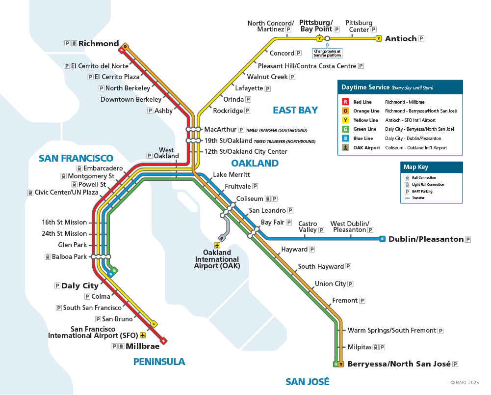
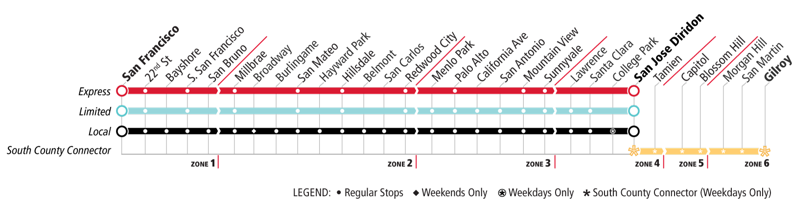

References#
Bay Area Transit Network#
The map below shows the full BART and Caltrain networks. Stations included in this analysis are all stops on both systems except SFO/Millbrae (BART) and Stanford (Caltrain).

BART system map. Source: BART (2025).

Caltrain service map. Source: Caltrain (2025).
Data Sources#
BART Ridership. Bay Area Rapid Transit. (2025). Average weekday exits by station, FY2025 (July 2024–June 2025). Retrieved from https://www.bart.gov/about/reports/ridership
Caltrain Ridership. Caltrain. (2025). FY2025 Annual Ridership Report, Table 3: Average mid-week ridership by station. Retrieved from https://www.caltrain.com/about/stats-and-reports
U.S. Census Bureau. (2024). American Community Survey 5-year estimates, 2024. Variables: median household income (B19013), vehicle availability (B08201), race and ethnicity (B03002). Retrieved via Census API.
U.S. Census Bureau. (2024). TIGER/Line Shapefiles: Census tract boundaries, California. Retrieved from https://www.census.gov/geographies/mapping-files/time-series/geo/tiger-line-file.html
OpenStreetMap contributors. (2025). Amenity data for Bay Area transit station buffers. Retrieved via Overpass API. Data available under the Open Database License: https://www.openstreetmap.org/copyright
Methods and Tools#
Python packages. GeoPandas 0.14, Plotly 5.x, Pandas 2.x, NumPy 1.x, SciPy 1.x, Scikit-learn 1.x.
Walkability threshold. The half-mile buffer follows the standard used in: Hsiao, S. (1997). Street-level transit feeder service design. Journal of Transportation Engineering, 123(4), 310–314.
Gini coefficient applied to amenities. Adapted from: Talen, E., & Anselin, L. (1998). Assessing spatial equity: An evaluation of measures of accessibility to public playgrounds. Environment and Planning A, 30(4), 595–613.
FDR correction. Benjamini, Y., & Hochberg, Y. (1995). Controlling the false discovery rate: A practical and powerful approach to multiple testing. Journal of the Royal Statistical Society, Series B, 57(1), 289–300.
Glass’s Delta. Glass, G. V. (1976). Primary, secondary, and meta-analysis of research. Educational Researcher, 5(10), 3–8.